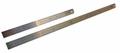

Learning pathway
Plan before production
Read, check your understanding, apply the ideas to your project and save evidence.
- 1Working drawings
- 2Cutting list and schedule
- 3Accurate mark-out
Student evidence
Your details
Autosave is on
Working drawings turn an approved idea into clear production information.
Communicating the selected design with working drawings

Working drawings explain what a product should look like and how its parts relate to one another. For the Desk Tidy project, students use drawings to communicate their own approved layout before production begins. Clear drawings help the student and teacher check that the design is practical, complete and consistent with the project brief.
Orthographic drawings show separate views of the design, such as the front, top and side. Each view presents the object without perspective, making component positions and relationships easier to understand. The authorised unit requirement is for orthographic views drawn at a scale of 1:10 and supported by written dimensions. The required views should show enough information to explain the selected design clearly.
An isometric drawing shows the Desk Tidy as a three-dimensional form. It helps the viewer understand the overall shape, layout and arrangement of compartments more quickly than separate flat views. However, an isometric drawing does not replace the measured information in the orthographic drawings. Both drawing types communicate different parts of the design.
Scale and dimensions must not be confused. A visual scale of 1:10 means the drawing is shown smaller than the intended product. Written dimensions state the intended size and must be recorded in millimetres. During production, students use the written dimensions rather than estimating from the image or measuring the printed drawing.
The completed drawing set should include a clear title, labelled views, written dimensions, component relationships and short notes where they improve understanding. The drawings must match the approved student design, not an earlier concept or another student’s layout. Before production, check that matching parts, positions and dimensions agree across every view and submit the drawings for teacher approval.
- Match: Confirm the drawings represent the approved design.
- Compare: Check that components align across all views.
- Dimension: Record required sizes clearly in millimetres.
- Clarify: Add labels and notes where meaning could be unclear.
- Approve: Complete teacher checks before starting production.
Good production starts with accurate information and a realistic sequence.
Cutting lists and a realistic production schedule

Once the Desk Tidy design and working drawings are approved, the next step is to prepare a cutting list. A cutting list converts the drawings into clear production information. Each entry should include the part name, quantity, material and exact dimensions shown on the approved drawings. It must match the selected design and be checked by the teacher before production begins.
Accuracy matters because one mistake can affect several later stages. Check that every part shown in the drawings appears on the cutting list, that quantities are correct and that matching parts have matching dimensions. Review the totals carefully and confirm that the listed material suits the approved design. Do not rely on memory or estimate missing information.
A production schedule places the project stages in a sensible order. The authorised sequence moves from marking to cutting, joint preparation, dry fitting, assembly, surface preparation, finishing, testing and evaluation. Some stages depend on earlier work being completed correctly. For example, assembly should not begin until the parts have been dry fitted and any problems have been identified.
A simple Gantt chart shows when each stage is expected to occur and how long it may take relative to the rest of the project. Milestones mark important checkpoints, such as approved drawings, a completed cutting list, a successful dry fit or a finished product ready for testing. The chart should also consider teacher access, shared tools, workshop resources and other activities that may affect progress.
Contingency time allows for realistic delays, corrections or extra checking without rushing. It should not be used as spare time at the start of the project. A useful schedule helps students work steadily, identify what must happen next and adjust the plan when approved changes are required.
| Stage | Planning focus | Checkpoint |
|---|---|---|
| Marking and cutting | Follow approved dimensions and sequence | Parts checked before moving on |
| Joint preparation and dry fitting | Check fit and component relationships | Teacher-approved dry fit |
| Assembly and surface preparation | Maintain order and quality | Form and surfaces checked |
| Finishing, testing and evaluation | Complete final stages and record evidence | Product ready for evaluation |
Accurate marking out creates the foundation for accurate production.
Datums and accurate marking out
Workshop dimensions are recorded in millimetres, so measurements must be read and marked carefully. Use a sharp pencil to produce fine, clear lines, a steel rule for measuring and a try square for lines that must be square to an edge. Thick or unclear marks can make it difficult to decide exactly where a cut or joint should be placed.
A datum is a reliable starting point used for measurements. This may be a straight reference edge or, where appropriate, identified face-side and face-edge surfaces. Measuring related features from the same datum reduces the chance of small errors building up across a component. If measurements are taken from several different edges, any unevenness can cause parts to misalign.
Place the rule so its zero mark aligns exactly with the datum. Do not assume the physical end of the rule is the same as zero. Look directly above the measurement to avoid parallax, which occurs when a scale is viewed from an angle and appears to line up with the wrong point. Hold the rule securely and make one fine mark before using the try square to extend it.
Mark the waste side clearly so the required material is not removed by mistake. Matching components should be compared and, where suitable, checked together so their lengths, positions or related features agree. “Measure twice, cut once” means confirming the dimension, datum, orientation and waste side before making an irreversible decision. It does not simply mean repeating the same unchecked measurement.
Mark-out accuracy affects every later stage. Incorrect lines can create poor joint fit, components that are out of square, reduced stability and unnecessary material waste. Before cutting, compare the marks with the approved drawing and cutting list. Ask the teacher or a partner to check critical measurements and relationships, while remembering that teacher approval still controls production.
- Select: Identify the reliable datum or reference edge.
- Measure: Work from zero and read directly above the rule.
- Mark: Use a sharp pencil and extend square lines clearly.
- Identify: Mark the waste side and component orientation.
- Compare: Check matching parts and related measurements.
- Verify: Complete a teacher or partner check before cutting.
Guided practice
Weeks 5-6 knowledge checks
Use hints and feedback until you can explain each decision.
Apply your learning
Scaffolded written responses
Write first, use the guidance, then check the appropriate response example.
Finish the two-week block
Save your evidence
Your work saves in this browser, but browser storage is not the official submission. Save this page as a PDF.
No marks, answers or personal information are sent from this webpage.